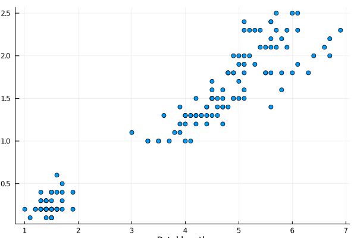
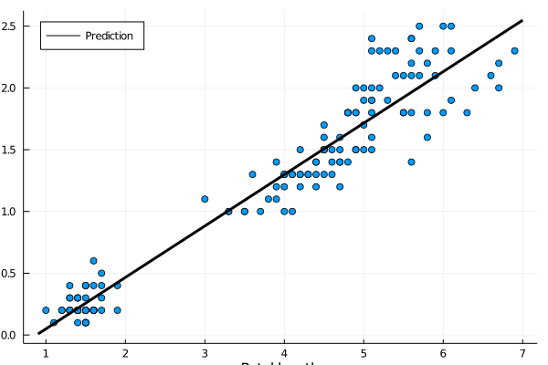

Linear regression
To experiment with machine learning models, we first need to load the data by
using BSON
file_name = joinpath("data", "iris.bson")
data = BSON.load(file_name)Dict{Symbol,Any} with 3 entries:
:y => [1, 1, 1, 1, 1, 1, 1, 1, 1, 1 … 3, 3, 3, 3, 3, 3, 3, 3, 3, 3]
:X => [5.1 3.5 1.4 0.2; 4.9 3.0 1.4 0.2; … ; 6.2 3.4 5.4 2.3; 5.9 3.0 5.…
:y_name => Any["Iris-setosa", "Iris-versicolor", "Iris-virginica"]This creates a dictionary data whose entries can be accessed via data[:X]. The simpler way of loading is
using BSON: @load
@load file_name X y y_nameThe columns of X (features) are sepal length, sepal width, petal length and petal width (in this order).
When designing a classification method, a good practice is to perform an analysis of the data. That may include checking for NaNs, infinite values, obvious errors, standard deviations of features or others. Here, we only plot the data.
For simplicity of visualization, remove all features besides petal length and petal width. Since we need to include the bias (intercept), add a column of ones as the last column.
Then plot the dataset.
Solution:
Since the peral length and width are the third and fourth columns, respectively, we use X[:,3:4]. Then we need to cat it with a vector of ones.
y = X[:,4]
X = hcat(X[:,3], repeat([1], size(X,1)))The best plot in this case is the scatter plot.
using Plots
scatter(X[:,1], y, label="", xlabel="Petal length", ylabel="Petal width")/home/runner/.julia/packages/GR/RlE5Y/src/../deps/gr/bin/gksqt: error while loading shared libraries: libQt5Widgets.so.5: cannot open shared object file: No such file or directory connect: Connection refused GKS: can't connect to GKS socket application GKS: Open failed in routine OPEN_WS GKS: GKS not in proper state. GKS must be either in the state WSOP or WSAC in routine ACTIVATE_WS

The figure shows a positive correlation between length and width. This is natural as bigger petals means both longer and wider petals. We will estimate the dependence of the linear regression.
Use the closed-form formula to solve the coefficient for the linear regression. Then use the optim method derived in the previous lecture to solve the optimization problem via gradient descent. The results should be identical. Compare the elapsed time.
Solution:
The closed-form expression is $(X^\top X)^{-1}X^\top y$. This can be coded as (X'*X) \ (X'*y). To measure the time, we use the @time macro.
@time w = (X'*X) \ (X'*y)2-element Array{Float64,1}:
0.4164191322854024
-0.36651404521673364For using the gradient, we first realize that the formula for the derivate is $X^\top *(Xw-y)$. Defining the derivative function in g, we call the optim method in the same way as last lecture. Note that we needed to use much smaller stepsize this time.
g(w) = (X'*(X*w-y))
@time w2 = optim([], g, zeros(size(X,2)), GD(1e-4); max_iter=10000)2-element Array{Float64,1}:
0.4164191322847585
-0.3665140452138131The difference between the solutions is
using LinearAlgebra
norm(w-w2)2.9906857963742033e-12
which is acceptable.
The correct solution is
2-element Array{Float64,1}:
0.4164191322854024
-0.36651404521673364This gives an advice how to predict the petal width if only petal length is known.
Write the dependence on the petal width on the petal length. Plot it on the previous graph.
Solution:
The desired dependence is
\[\text{width} = -0.3665 + 0.4164*\text{length}.\]
To plot the prediction, we save the function into f_pred, then create the limits x_lim and finally plot a function which connects the two points. We move the legend to the top-left corner and we prescribe the limits on the $y$ axis.
scatter(X[:,1], y, label="", xlabel="Petal length", ylabel="Petal width")
f_pred(x) = w[1]*x + w[2]
x_lim = [minimum(X[:,1])-0.1; maximum(X[:,1])+0.1]
plot!(x_lim, f_pred.(x_lim), label="Prediction", legend=:topleft, line=(:black,3))/home/runner/.julia/packages/GR/RlE5Y/src/../deps/gr/bin/gksqt: error while loading shared libraries: libQt5Widgets.so.5: cannot open shared object file: No such file or directory connect: Connection refused GKS: can't connect to GKS socket application GKS: Open failed in routine OPEN_WS GKS: GKS not in proper state. GKS must be either in the state WSOP or WSAC in routine ACTIVATE_WS
